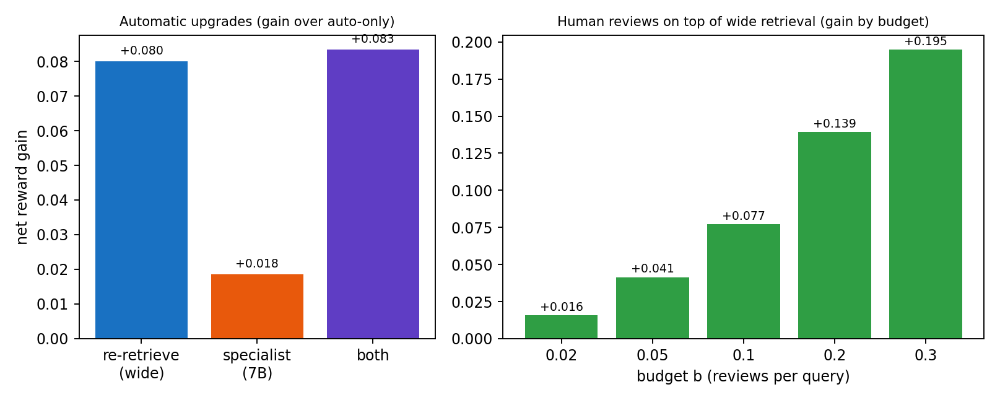
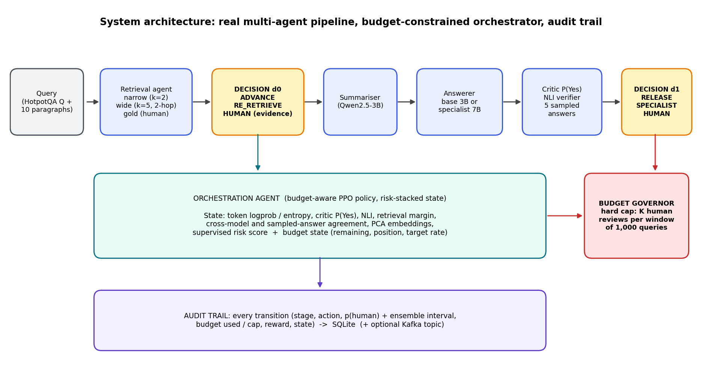
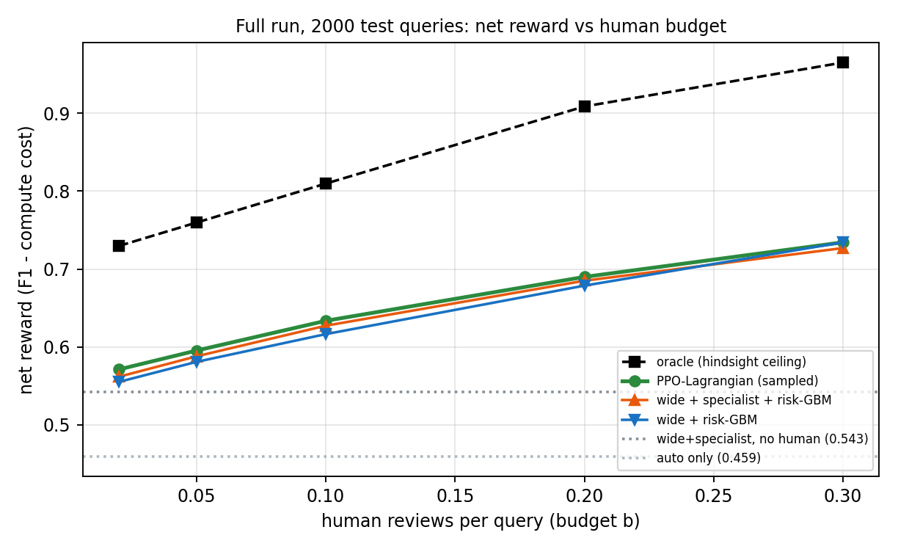
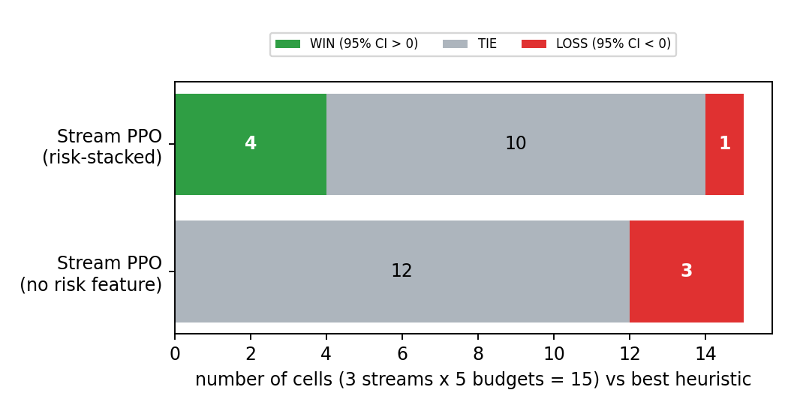

I Rebuilt My Best AI Result With Real Data. The Win Almost Disappeared.
What a human-review budget, 2,000 real questions and a pre-registration taught me about credit I did not deserve.

In my last article, I trained an agent to decide when a human should review an AI's answer, and it beat every baseline by a spectacular margin. The weakness was obvious in hindsight. Much of the environment was simulated, and the baselines were easy.
So I started over with one rule: no more synthetic anything.
Round two
- Real questions from HotpotQA, answered by real language models (Qwen 3B and 7B).
- Every possible action run once and saved. Training and testing used real outputs, not guesses. I call it cached-counterfactual replay.
- A hard budget: at most K human reviews per 1,000 questions, enforced by blocking the "ask a human" action once the budget is spent. Across every test, zero windows went over budget.
- Strong baselines with the same options as my agent.

What the real version said
Most of the gain was free. Re-retrieving evidence with a wider search added 0.080 net reward, more than anything the learned policy contributed. Calling the bigger 7B model added 0.019. Human reviews helped too, from +0.016 at a 2% budget to +0.195 at 30%. None of that needs reinforcement learning.

A plain RL agent did not beat a smart rule. Against a supervised risk model plus a pacing rule: 0 wins, 12 ties and 3 losses across 15 test settings.
Giving the agent a risk score helped, a little. When I fed it a supervised estimate of "how likely is this answer wrong", it improved over the plain agent in all 15 settings, by 0.005 to 0.021 net reward, and went 4 wins, 10 ties and 1 loss against the best rule.

The real bottleneck was information, not the algorithm. The best single warning signal predicted wrong answers with an AUROC around 0.68, and everything combined reached about 0.77. A hindsight oracle sat 0.16 to 0.23 above my agent at every budget. No policy can fix what its signals cannot see.
The part I would put on a poster
The gains from the risk-stacked agent are small, and I chose some design details after seeing test numbers, which makes them look better than they are. So before claiming anything, I wrote a pre-registration: three hypotheses, a correction for testing multiple times, frozen code and model hashes, and 2,000 fresh questions the system had never touched. The evaluation refuses to run if any frozen file has changed.
If two or three of the hypotheses hold, the small improvement is real. If zero or one, the earlier gains were mostly noise, and I will say so. Both outcomes are publishable.
Where this stands: the confirmatory test has not been run yet. The 2,000-question fresh set is built and behaves like the main one, but the evaluation stopped because my registration file went missing when my session changed. I am regenerating it and checking its hashes against the originals before I run anything. Until then, the honest claim is a consistent small improvement that is not yet independently confirmed.
What I would tell you
- Weak baselines produce impressive charts. Ask what a smart non-learning rule would do.
- The best action is often cheap and automatic. Measure that before crediting the learning.
- If you tuned anything after looking at test results, say so and plan a fresh test.